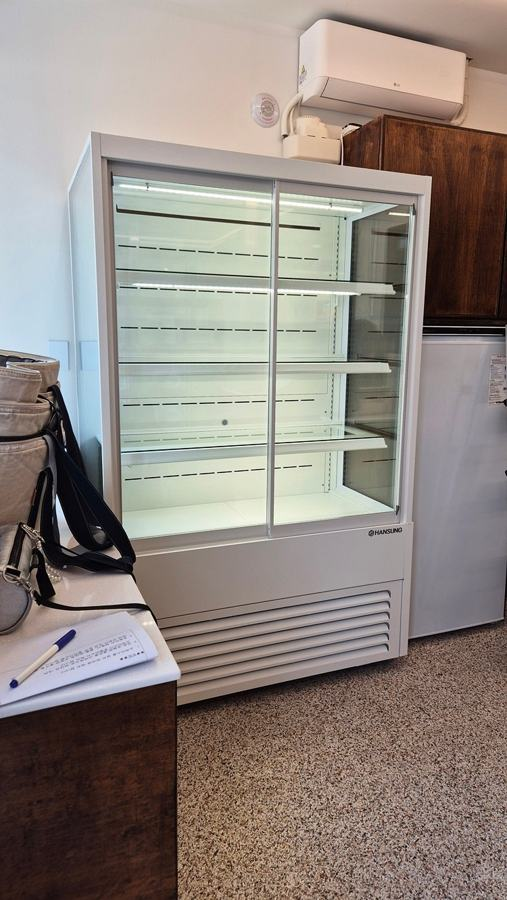

쇼케이스 이용 및 관리
반찬쇼케이스 오픈쇼케이스 차이, 덜어 파는 집과 담아 파는 집

큰 통에 담긴 반찬을 손님 주문대로 덜어 파는 매장은 유리로 덮인 반찬쇼케이스가, 소분 포장한 반찬을 손님이 직접 집어 가는 매장은 문 없는 다단 오픈쇼케이스가 맞습니다. 두 방식을 섞어 파는 반찬가게라면 매대 앞쪽엔 반찬쇼케이스, 벽면엔 오픈쇼케이스로 역할을 나누는 구성이 흔합니다.
안녕하세요. 반찬가게 매대를 매장 동선에 맞춰 설계하는 한성쇼케이스입니다.
반찬가게 창업 상담에서 꼭 나오는 질문이 있습니다. "반찬 진열하는 냉장고는 유리 덮인 게 나을까요, 문 없는 오픈형이 나을까요?"
둘 다 반찬을 차갑게 보여 주는 장비지만, 손님이 반찬을 사 가는 방식이 다르면 맞는 장비도 달라집니다.
판매 방식은 그대로 두고 장비만 유행을 따라가면 손님은 헷갈리고 직원은 바빠지기 쉽습니다.
오늘은 두 쇼케이스가 어디서 갈리는지, 반찬 종류와 매장 운영 방식에 따라 어떻게 고르면 되는지 정리해 드리겠습니다.
1. 판매 방식이 먼저입니다
반찬쇼케이스는 위가 유리로 덮인 낮은 평대 형태가 많습니다. 손님은 유리 너머로 반찬을 보고 고르고, 사장님이나 직원이 뒤에서 통을 열어 원하는 만큼 덜어 담아 줍니다.
무게로 파는 나물, 볶음, 조림처럼 그날그날 양이 달라지는 반찬에 잘 맞습니다.
오픈쇼케이스는 문 없이 여러 단으로 된 진열대에 미리 포장한 반찬을 세워 두는 방식입니다. 손님이 직접 집어 계산대로 가져가니 직원 응대 없이도 판매가 돌아갑니다.
퇴근길 손님처럼 빨리 고르고 나가려는 고객이 많은 매장에서 회전이 빠릅니다.
- 덜어 파는 반찬 비중이 높으면 반찬쇼케이스
- 소분 포장 비중이 높으면 오픈쇼케이스
- 직원 수와 응대 가능 시간도 함께 고려
2. 온도와 위생에서 갈리는 점
반찬쇼케이스는 유리 덮개가 있어 바깥 공기와 손님 손길이 반찬에 직접 닿지 않습니다. 뚜껑 없는 통에 담긴 반찬도 비교적 일정한 온도로 지키기 쉽고, 손님 입김이나 먼지에서 반찬을 보호하는 효과도 있습니다.
오픈쇼케이스는 문이 없어 주변 공기의 영향을 더 받습니다. 그래서 반찬을 반드시 뚜껑 있는 용기에 담아야 하고, 에어컨 바람이나 출입문 바람이 닿지 않는 자리에 두는 것이 중요합니다.
영업 후에는 나이트커버를 내려 냉기를 붙잡아 두는 습관도 필요합니다. 운영 온도는 반찬 종류에 따라 다르지만 3~7도 범위로 맞추는 매장이 많습니다.


3. 보이는 모습과 조명
덜어 파는 반찬쇼케이스는 큰 통에 수북이 담긴 반찬이 그대로 보이므로 색감이 곧 상품성입니다. 위에서 비추는 조명이 반찬 색을 탁하게 만들지 않는지, 유리에 결로가 맺혀 축축해 보이지 않는지가 첫인상을 정합니다.
오픈쇼케이스는 포장 용기의 라벨과 가격표가 잘 읽히는 게 중요합니다. 단마다 조명을 넣어 아래 칸까지 밝게 하고, 손님 눈높이 칸에 잘 팔리는 반찬을 두면 고르는 시간이 짧아집니다.
- 반찬쇼케이스는 결로 방지와 반찬 색을 살리는 조명
- 오픈쇼케이스는 단별 조명과 가격표 레일
4. 두 가지를 함께 쓰는 배치
요즘 반찬가게는 즉석에서 덜어 파는 반찬과 포장 반찬을 함께 내는 곳이 많습니다. 이런 매장은 계산대 앞에 반찬쇼케이스를 두고 직원이 응대하며, 벽면에는 오픈쇼케이스를 세워 손님이 기다리는 동안 포장 반찬을 함께 집도록 동선을 짜는 경우가 많습니다.
매장 폭이 좁다면 두 장비 사이 통로가 손님 두 명이 엇갈려 지나갈 수 있는지 먼저 확인해 보세요. 실측 치수와 판매할 반찬 구성을 알려 주시면 두 장비 크기를 매장에 맞게 나눠 설계해 드립니다.
체크리스트
- 덜어 파는 반찬과 포장 반찬의 비중
- 응대할 직원 수
- 에어컨·출입문 바람 위치
- 결로 방지 유리와 조명 색
- 두 장비 사이 통로 폭
현장에서 자주 보는 경우: 아무 냉장고나 들였다가 매대를 다시 짜는 매장
가게를 처음 열 때 급한 마음에 아무 냉장고나 들였다가, 인테리어와 어울리지 않고 판매 방식과도 맞지 않아 다시 상담을 받으시는 반찬가게 사장님을 자주 뵙습니다.
덜어 파는 반찬을 오픈형에 두거나, 포장 반찬을 유리 평대에 눕혀 두는 식이죠.
한성쇼케이스는 직접 운영하는 제조 공장에서 반찬쇼케이스의 크기와 모양, 디자인을 사장님 매장에 맞춰 하나하나 정해 제작하고, 제조부터 시공까지 직접 맡습니다.
전자제품인 만큼 고장 가능성을 염두에 두고, 문제가 생기면 장사에 지장이 덜 가도록 A/S로 바로 대응합니다.





자주 묻는 질문
오픈쇼케이스는 전기가 더 많이 들지 않나요?
문이 없어 냉기 관리가 더 중요한 것은 맞습니다. 바람 닿지 않는 자리 선정과 영업 후 나이트커버 사용, 진열 라인을 넘치게 채우지 않는 습관으로 부담을 줄일 수 있습니다.
반찬쇼케이스에 포장 반찬도 같이 둘 수 있나요?
둘 수는 있지만 손님이 직접 꺼내기 어려워 결국 직원이 응대해야 합니다. 포장 반찬 비중이 늘었다면 별도의 오픈형 진열대를 두는 편이 손님과 직원 모두 편합니다.
하나로 두 가지를 겸하는 제품도 있나요?
상단은 유리로 덮고 하단은 오픈형으로 나누는 식의 구성도 맞춤 제작으로 검토할 수 있습니다. 매장 폭이 좁아 장비 두 대를 두기 어려울 때 고려해 볼 만합니다.
매장 조건에 맞춰 만드는 한성쇼케이스
원하시는 제품 사진과 설치할 공간 사진만 보내 주셔도 매장에 맞는 구성을 추천해 드립니다.
- 전국 240여 개 A/S 전담 센터 운영
- 본사 대량 자재 매입으로 품질 대비 합리적인 가격
- 유럽제·삼성 냉각 콤프레셔 적용
- 국내 최초 쇼케이스 전문 디자이너 상주
매장 폭과 원하는 진열 구성을 알려 주세요. 실측과 견적을 안내해 드립니다.
031-986-2458